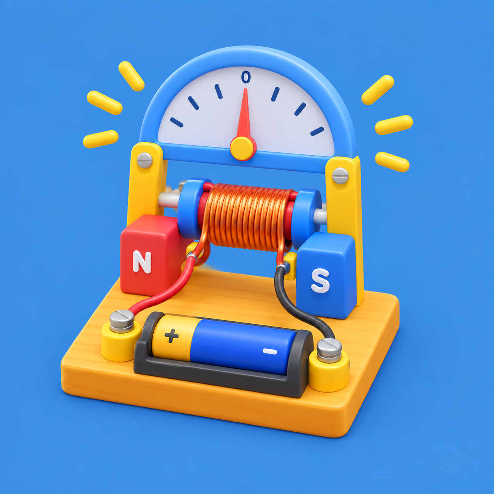
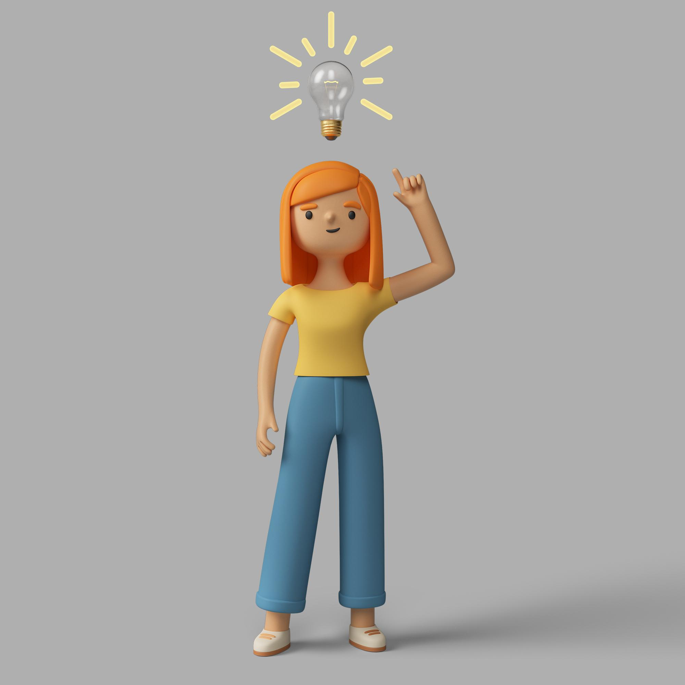

Tempat siswa terpelajar mengembangkan dan mewujudkan inovasinya dengan akal yang kreatif, inovatif, serta imajinasi yang luas

Sebuah Galvanometer yang dirancang secara sederhana untuk mendeteksi dan mengukur arus listrik dinamis dengan menggunakan metode elektromagnetis yang dihasilkan listrik
Electromagnetic train adalah model mainan atau eksperimen sains yang memperlihatkan cara kerja motor listrik linier menggunakan baterai, magnet neodymium, dan lilitan kawat tembaga
Eksperimen lava lamp (lampu lava sederhana) adalah percobaan sains seru yang menunjukkan reaksi kimia dan perbedaan massa jenis (densitas) cairan dengan meniru efek gelembung naik-turun seperti pada lampu lava hias

Ferrofluid adalah cairan khusus yang bisa ditarik dan bergerak jika didekatkan dengan magnet. Cairan hitam ini terbuat dari partikel magnetik sangat kecil (ukuran nanometer) yang tercampur dalam cairan pelarut seperti air atau minyak
Eksperimen cairan chemiluminescence (kemiluminesensi) adalah percobaan ilmiah yang menunjukkan proses produksi atau pemancaran cahaya akibat reaksi kimia tanpa menghasilkan panas yang signifikan